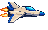
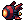
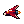
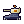
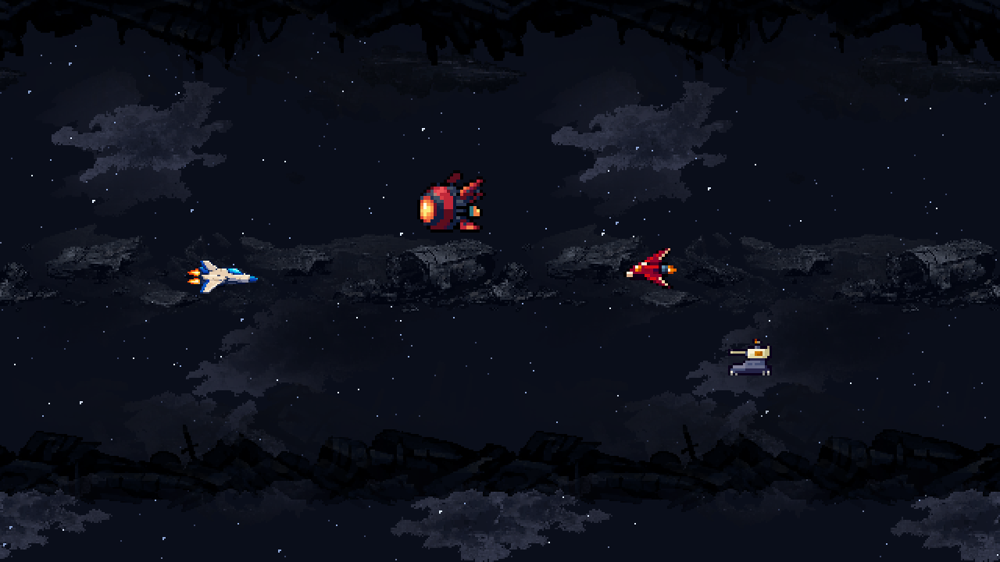

48 × 30









몸체와 포구는 고정하고 배기 부분 26픽셀만 바뀝니다. 흔들리던 생성 프레임을 제외한 두 자세를 반복합니다.
Unity Editor의 정적 비교 렌더입니다. 640×360 / PPU16, 기존 적 크기 계산식을 사용했습니다. UI는 숨겼고 실플레이 검증은 아직입니다.

전체 원본 후보 비교 · 픽셀·프레임 검수 기록 · Unity 캡처 기록
드론의 생성 애니메이션은 몸체가 위아래로 흔들려 제외했습니다. 새 폭발은 정적 원본까지만 준비했고, 뱅킹·탄·캡슐과 전체 폭발 프레임은 다음 제작 범위입니다.
스타일 2안은 선택 완료입니다. 이 페이지는 새 원본 묶음의 아트 검수용이며, 기존 배경·판정·게임 수치를 변경하지 않습니다.